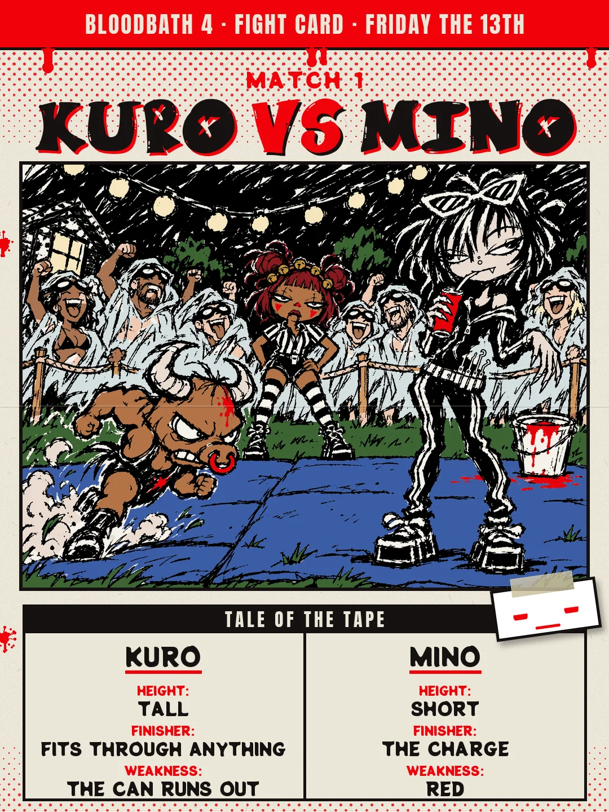
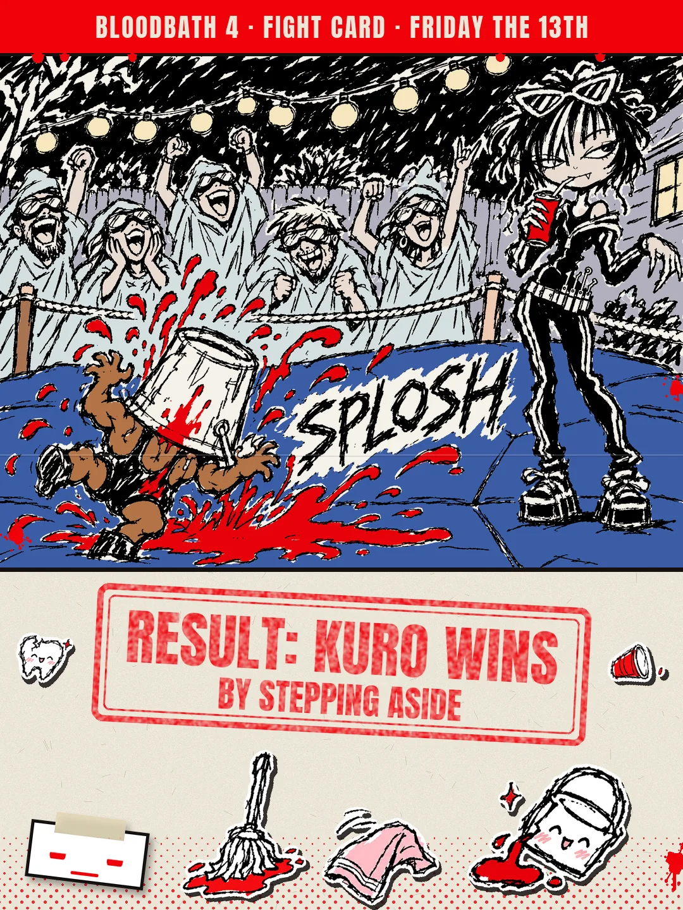
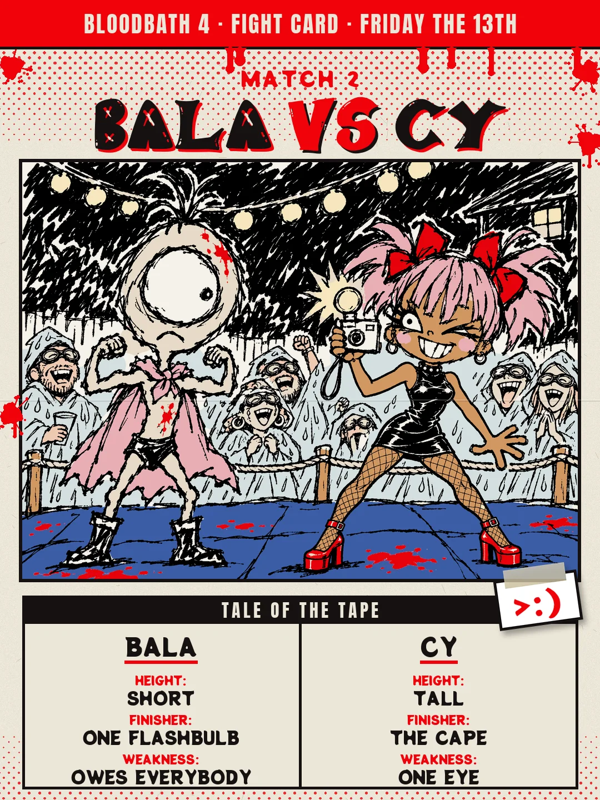
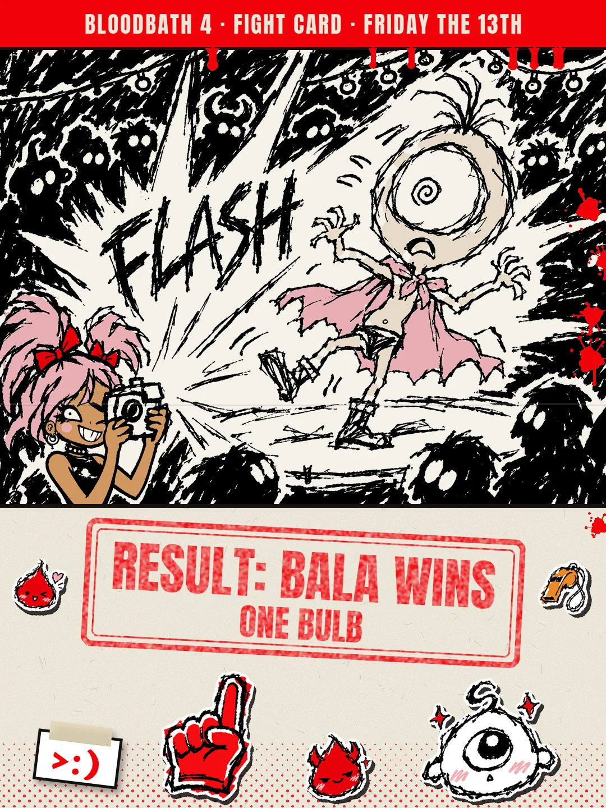
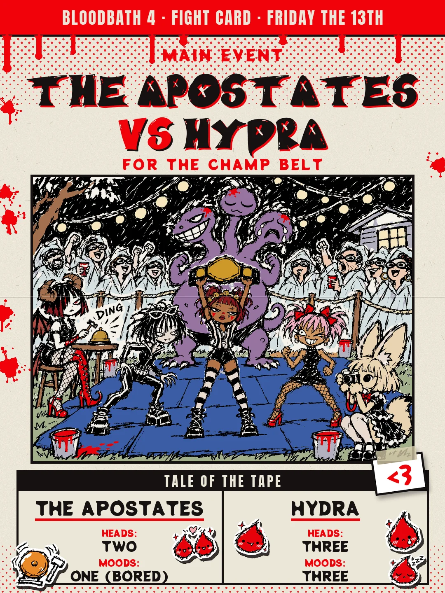
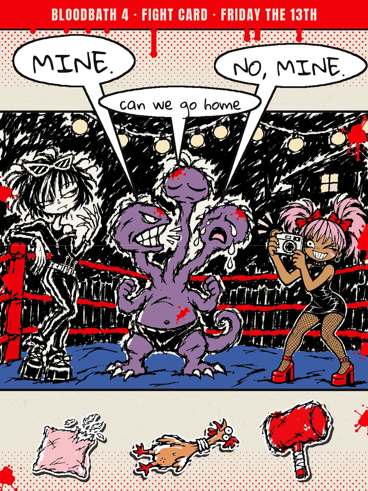
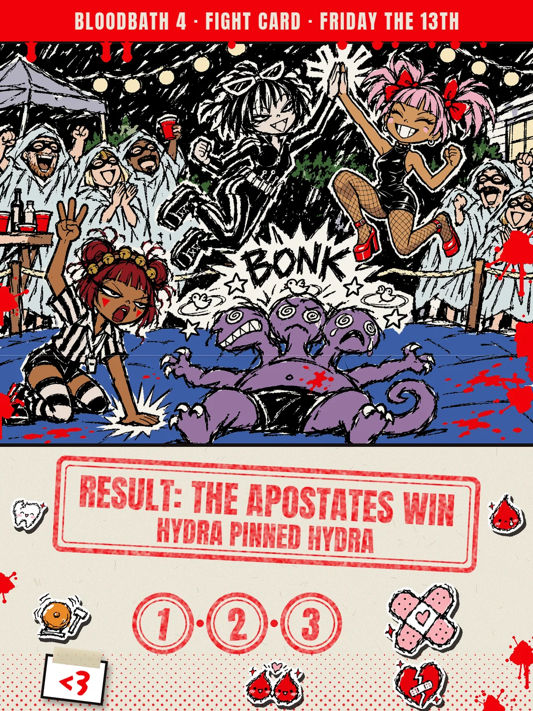
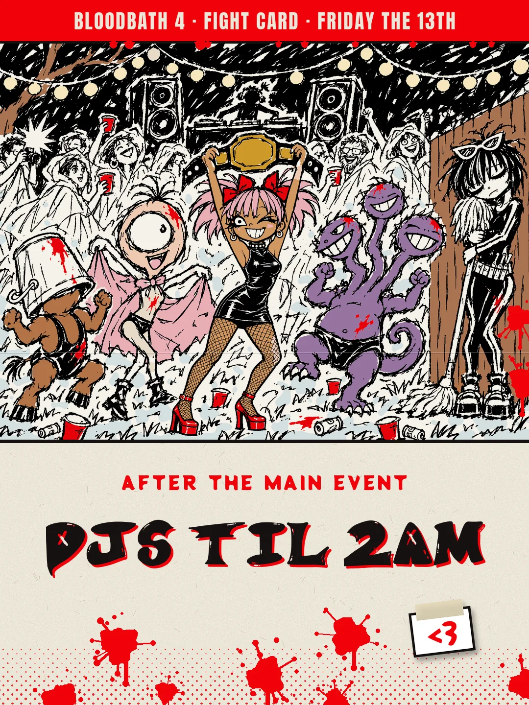
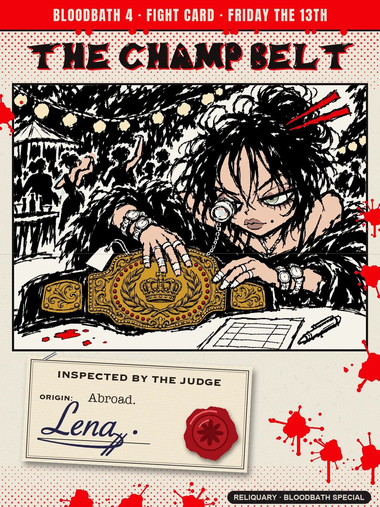
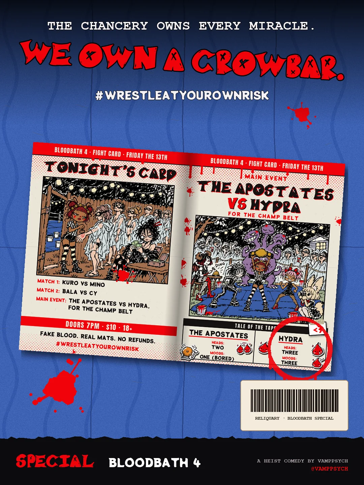

A MANHWA · SPECIAL
BLOODBATH 4 · THE FIGHT CARD
hydra pinned hydra. bring a poncho 🩸
The cover, the 10-page fight card, the back. Read it top to bottom.










END OF THE FIGHT CARD
This one's a special for BLOODBATH 4, so it doesn't count. The real story starts in Episode 1.